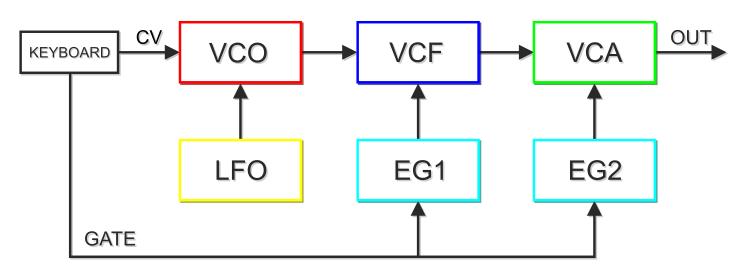

Reading Jonathan Sterne
Sound Signatures, Amsterdam 2013
Introduction
Eliminate redundancies!
Reduce bandwidth use!
Travel great distances frequently and with little effort!
Accumulate on the hard drives of the middle class!
Address a distracted listening subject!
Programme
Metaphors for Signals
Analog Signal Processing
Digital Signal Processing
Data as Imperative
Metaphors for Signals
Figuration
Metaphors
"Each metaphor elucidates, figures, or for that matter 'processes' a different aspect of what is at stake in audio signal processing. Each might nudge us in productive or problematic directions when thinking about the relationship of sound and media, or otherwise advance various agendas in sound scholarship."
(Sterne and Rodgers, 33)
Travel
Metaphors
| productive | problematic |
|---|---|
Analog Signal Processing
Analog
Signal Processing

Diagram
Signal Processing
"On the one hand, the early modern university had relied so heavily on printed books in all their multilingual interrelations that the rather simultaneous emergence of technical, equally infallible construction drawings escaped its notice. Letters, ciphers, and diagrams in their threefold combination proved too alien for humanists. The combination, however, of type and woodcut or copperplate enabled scientific visualization at a level of precision unheard of by Greeks and monks."
(Kittler 248)
VCF
Signal Processing

Shapers
Signal Processing
"The language of the raw and the cooked also permeates discourses of sound synthesis, where processing again figures as an expression of creative control. An oscillator generates a sound that is called raw until it is run through filters, amplifiers, and other sound shapers."
(Sterne and Rodgers, 37)
Noise
Signal Processing

Phonograph
Signal Processing
The phonograph does not hear as do ears that have been trained immediately to filter voices, words, and sounds out of noise; it registers acoustic events as such. Articulateness becomes a second-order exception in a spectrum of noise.
(Kittler 23)
Digital Signal Processing
DSP
Signal Processing

Media Shift
Signal Processing
| Analog | Digital |
|---|---|
Filter
Signal Processing
function(obj, iterator, context) {
var results = [];
if (obj == null) return results;
each(obj, function(value, index, list) {
if (iterator.call(context, value, index, list))
results.push(value);
});
return results;
};
Compression
Signal Processing
An mp3 takes an existing CD-quality digital audio file and removes as much data content as possible, relying on listener's bodies and brains to make up the difference. For example, a three-minute stereo CD file takes up about 30 megabytes of disk space; a three-minute mp3 of average quality takes up 3 to 4 megabytes of disk space. This is accomplished through a variety of filters and processes.
(Sterne 832)
Frame
Signal Processing
Finally, the encodes assembles a 'serial bitstream' which contains header information and instructions for each frame. These instructions are for playback instructions are for playback programs and devices to ensure consistent playback.
(Sterne 833)
http://www.codeproject.com/Articles/8295/MPEG-Audio-Frame-Header
Data as Imperative
Imperatives
Data as Imperative
Eliminate redundancies!
Reduce bandwidth use!
Travel great distances frequently and with little effort!
Accumulate on the hard drives of the middle class!
Address a distracted listening subject!
Ubiquity
Data as Imperative
Our argument is grounded in the sonic register and its various electrical and digital transductions, but even if it is rarely named in some registers, signal processing is equally crucial to the experience of visual, olfactory, tactile, and culinary technologies.
(Sterne and Rodgers 33)
Numbers
Data as Imperative
With numbers everything goes. Modulation, transformation, synchronization; delay, storage, transposition; scrambling, scanning, mapping - a total media link on a digital base will erase the very concept of medium. Instead of wiring people and technologies, absolute knowledge will run as an endless loop.
(Kittler 2)
Napoleon
Data as Imperative
And a brilliant young student of all these technically applied mathematics, a certain Bonaparte, overran, equipped with Satan's heavy artillery, old Europe.
(Kittler 248)